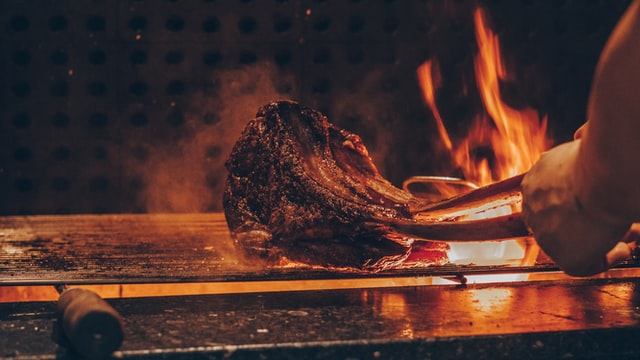

Nuestra parrilla
No se trata de una parrilla más, la intención es que aquellos que vayan, argentinos y turistas, puedan vivir una experiencia única.
"Los porteños se identifican, los extranjeros se sorprenden"

En nuestro establecimiento seleccionamos los mejores cortes de las razas Hereford y
Aberdeen Angus.
Al momento de apreciar un rico corte de carne lo ideal es comerlo jugoso y para eso debe respetarse
una regla de oro: los comensales deben esperar a la carne y no al revés.